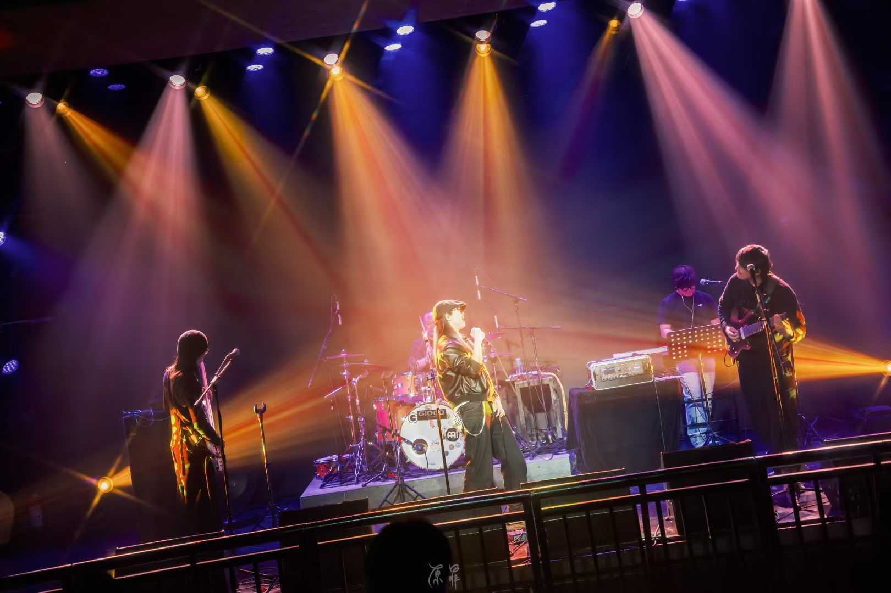

LIVE & PERFORMANCE18 张照片
现场音乐与演出制作
乐团、交响音乐会、户外公演与合作音乐人现场。
查看项目照片进入 →
Sound · Recording · Mixing
录音 · 混音 · 现场扩声
在现场、舞台与影像之间，捕捉声音的质感与情绪。
Selected fields
项目横跨不同场景与制作流程。以下按类型归纳，呈现持续参与的声音工作版图。
我叫于屿，是一名声音工作者。工作内容包括录音、混音与现场扩声，项目经验涉及音乐演出、文旅舞台、影视节目以及游戏动画等方向。关注现场沟通、声音细节与不同媒介的表达方式。
项目合作与工作沟通，欢迎来信。